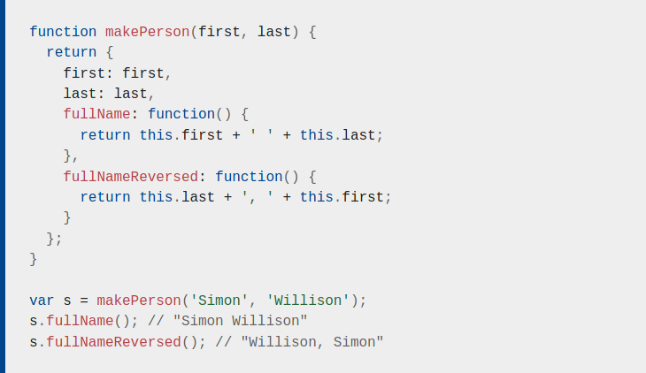

SOPHIA
*
Se presentan ante ti memorias de un desconocido.17 May 2021 - Grimpoteuthis
JavaScript fue creado en 1995 por Brendan Eich cuando era ingeniero en Netscape, se lanzó por primera vez en Netscape 2 a principios de 1996, ese mismo año resultó la primera edición estándar de ECMAScript; en 1999 se actualizó a la edición 3, la edición 5 de ECMAScript fue publicada en 2009 y la edición 6 fue publicada en junio de 2015.
El lenguaje JavaScript no posee el concepto de entrada o salida, está diseñado para ser ejecutado como lenguaje de scripting en un entorno hospedado y depende de los mecanismos que este disponga para comunicarse con el exterior, el entorno más común es el navegador pero no es el único que existe.
JavaScript es un lenguaje dinámico multiparadigma con tipos y operadores, objetos estándar integrados y métodos. Admite la programación orientada a objetos con prototipos de objetos, también admite programación funcional, las funciones se pueden almacenar en variables y ser pasadas como un objeto.
Números
Valores IEEE 754 de formato de 64 bits de doble precisión, por lo que no existen números enteros a excepción de BigInt. Un entero aparente resultaría ser un float aunque en la práctica, los valores enteros se tratarán como enteros de 32 bits.
Se admiten operadores estándar de aritmética, además existe un objeto incorporado llamado Math que proporciona funciones matemáticas avanzadas y constantes.
La función parseInt(string, base) permite convertir una cadena a número entero especificando su base, además se puede convertir a hexadecimal de la siguiente forma parseInt('0x10') y a octal anteponiendo el 0 en lugar del 0x pero esto solo funciona en navegadores antiguos (2013 o menor).
En el caso de la función parseFloat(), este siempre usa base 10.
Se puede convertir valores a números utilizando el operador unario +, ejemplo:
+ '42'; esto sería equivalente a 42, + '0x10'; igual a 16.
Si la cadena no es numérica devuelve un valor especial NaN (“Not a Number”).
Si NaN es utilizado como operando en una operación matemática el resultado será NaN.
Existe la función isNaN() para probar si un valor es NaN.
JavaScript también cuenta con los valores especiales Infinity e -Infinity y pueden ser probados con la función isFinite(), ejemplo: 1 / 0; equivale a Infinity, -1 / 0; equivale a -Infinity; isFinite(1/0); equivale a false.
Las funciones parseInt() y parseFloat() analizan una cadena y devuelve hasta que alcancen un carácter no válido para el formato de número; el operador '+' al encontrar un carácter no válido devuelve NaN.
Cadenas de texto
Son secuencias de caracteres Unicode, secuencias de unidades de código UTF-16; cada unidad de código está representada por un número de 16 bits. Cada carácter Unicode está representado por 1 o 2 unidades de código.
La propiedad lenght permite acceder a la longitud de la cadena. Por ejemplo: 'hello'.lenght; equivale a 5.
También tienen métodos para manipular las cadenas, ejemplo: 'hello'.charAt(0); devuelve "h", 'hello, world'.replace('world', 'mars'); retorna "hello, mars", entre otros.
Booleanos
Los valores que este tipo permite son true y false, aunque cualquier valor puede ser convertido a booleano teniendo en cuenta lo siguiente:
false, 0, cadenas vacias (""), NaN, null y undefined se convierten a false.true.Boolean();.null
Representa intencionalmente un valor nulo o “vacio”.
undefined
Indica una variable que aún no se le ha asignado un valor o no iniciada. undefined es una constante.
Existen tres tipos de palabras claves para declarar variables: let, const o var.
let: permite declarar variables a nivel de bloque, la variable solo estará disponible en el bloque donde está incluida.
const: permite declarar constantes (variables cuyos valores no cambiarán), la variable está disponible en el bloque donde se declara.
var: No posee restricciones en su uso, ya que inicialmente era la única forma de declarar variables, la variable está disponible en la función donde se declara.
Una variable que se declara sin asignación de valor, es de tipo undefined.
En JavaScript los bloques no tienen alcance, solo las funciones.
Operadores numéricos: +, -, *, / y %.
Operador de asignación = y operadores de asignación compuesta como: += y -=.
Operador de incremento ++ y decremento --, pueden ser utilizados como operadores prefijos o sufijos.
El operador + también permite concatenar cadenas aunque si se concatena un número a una cadena, este se convertirá a string.
Operadores de comparación: <, >, <= y >=; funcionan tanto para cadenas como para números. En la igualdad encontramos dos operadores: === permite realizar una comparación estricta y solo es verdadera si los operandos son del mismo tipo y sus contenidos coinciden, por otro lado, == permite una comparación abstracta donde convierte los operandos al mismo tipo (realiza coerción) antes de comparar sus contenidos. También cuenta con operadores != y !==.
Operadores lógicos && y ||.
Operador ternario ?, ejemplo: var allowed = (age > 18) ? 'yes' : 'no';.
if () {} else if () {} else {}
switch () {case 1: instruction break; default: instruction;}, es posible tener expresiones tanto en el switch como en los casos.
while (true) {}
do {} while ()
for (var i = 0; i < 5; i++) {}
for (let value of array) {}
for (let property in object) {}
Son simples colecciones de pares nombre-valor, la parte del nombre es una cadena y el valor puede ser cualquier valor de JavaScript, incluyendo más objetos.
Se puede crear un objeto vacío de dos formas: var obj = new Object(); y var obj = {};. La segunda se llama sintaxis literal de objeto y es más conveniente, esta sintaxis también es el núcleo del formato JSON.
Acceso a los atributos: obj.atributo; o obj['atributo'];
Se puede crear un prototipo de objeto y una instancia de la siguiente manera: function person(name) {this.name = name;}, para definir la instancia u objeto var you = new Person('you');.
Son un tipo especial de objeto que se acceden utilizando la sintaxis [], tienen la propiedad lenght que siempre es uno más que el índice más alto del arreglo.
Se puede crear de dos formas: var a = new Array(); a[0] = 'dog';, o utilizando una notación literal var a = ['dog'];. Al verificar la longitud a.lenght; obtenemos 1.
Si a[100] = 'rabbit';, al obtener la longitud a.lenght; obtenemos 101. Si se consulta un índice del arreglo que no existe se obtiene undefined.
Se puede recorrer un arreglo con arr.forEach() de la siguiente forma: ['dog', 'cat', 'hen'].forEach(function(currentValue, index, array) {});.
Los arreglos poseen varios métodos para su manipulación.
Una función puede tomar 0 o más parámetros con nombre, el cuerpo de la función puede contener tantas declaraciones sea necesario y permite declarar variables que son locales para esa función. La declaración return se usa para devolver un valor, terminando la función; si no se utiliza return o se utiliza vacía sin valor, devuelve undefined.
Las funciones tienen acceso a una variable adicional dentro de su cuerpo llamada arguments, es un objeto tipo arreglo que contiene los valores pasados a la función.
La sintaxis de los parámetros rest permiten representar un número indefinido de argumentos como un array ...variable, el parámetro rest captura todos los argumentos después de su declaración.
También está disponible un método para especificar un arreglo arbitrario de argumentos como parámetros de una función apply(), ejemplo: fun.apply(null, [2, 3, 4, 5]);. Se puede obtener el mismo resultado con el operador de propagación en la llamada de la función fun(...numbers);.
Es posible crear funciones anónimas, permiten colocar la definición de una función completa en cualquier lugar donde normalmente se colocará una expresión.
JavaScript permite llamar funciones de forma recursiva, siendo de gran utilidad en la manipulación de estructuras de árbol, como el DOM.
Para llamar de forma recursiva una función anónima se utilizan las expresiones de función, las cuales son ejecutadas inmediatamente al ser definidas.
JavaScript es un lenguaje basado en prototipos que no contiene declaración de clase, en su lugar, JavaScript usa funciones como clases.

Si this es usada dentro de una función se refiere al objeto actual. Si una función es llamada usando notación de puntos o corchetes, ese objeto se convierte en this, de lo contrario, this será el objeto global.
new crea un nuevo objeto vacío y luego llama a la función especificada, con this configurado para ese nuevo objeto. Las funciones diseñadas para ser llamadas con new se denominan funciones constructoras.
Una forma de mejorar el código anterior es asignando referencias de los objetos de función dentro del constructor
Otra forma es utilizar el objeto compartido Object.prototype, este forma parte de una cadena de búsqueda (“cadena de prototipos”) todo lo asignado aquí pasa a estar disponible para todas las instancias de ese constructor a través del objeto this.
Cuando JavaScript ejecuta una función, se crea un objeto scope para contener las variables locales creadas dentro de la función, se inicia con los parámetros de función. Se crea un objeto de alcance nuevo cada vez que la función se comienza a ejecutar y no se puede acceder directamente a estos objetos a través del código, ni iterar sobre las propiedades del objeto scope actual.
Normalmente, el recolector de basura limpia el objeto pero en este caso la función devuelta mantienen una referencia a ese objeto de ámbito, el objeto scope no será recolectado hasta que no haya más referencias al objeto función.
Estos objetos forman una cadena llamada “cadena de ámbito”.
Los cierres son útiles para guardar estados.
Última modificación: 20 May 2021